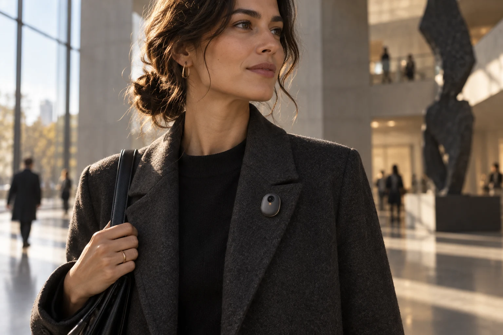

Easy to bring along.
A compact, understated object that belongs with the things you already wear. A companion, not another screen.

A wearable concept for bringing the moments you choose
into a conversation with Ava, powered by Synapses.
A passing idea. Something you noticed. A moment worth coming back to. Project AVA explores how a wearable could bring that context to the companion you already know.
Capture a moment. Bring it into Synapses. Continue the conversation with Ava.
 PROPOSED INDUSTRIAL DESIGN
PROPOSED INDUSTRIAL DESIGNA camera gives an AI companion a new perspective. We’re exploring hardware that can make that perspective useful, while keeping the experience simple and intentional.
Design goals. Final hardware specifications are not confirmed.
The ambition is simple: technology that accompanies your day, without becoming the centre of it.
The companion you know in the app is the starting point.
The wearable is our vision for extending that relationship.
This is the connection we’re exploring. The wearable gathers the moment; the app is where you choose what happens next.
A simple, intentional way to capture a photo or a short moment, with clear control over when the camera is active.
Planned experience · Hardware and integration under evaluation
A compact, understated object that belongs with the things you already wear. A companion, not another screen.
Visible capture, intentional sharing, and an understandable way to stop. These are design requirements, not optional extras.
Direct access to your own media is central to our hardware evaluation. The goal is a real AVA experience, not a separate supplier app.
We’re exploring hardware that can support the AVA experience. The imagery shows a proposed design. Final appearance, capabilities, pricing, and availability have not been confirmed.
Explore Ava in Synapses →The wearable is a concept and is not available to order. You can visit Synapses to explore the existing companion app and its current access options.
No. Wearable media transfer and the connection to Synapses still need to be developed and tested. The flow shown here describes the intended experience.
Our direction is one connected AVA experience around Synapses. Account linking and final app support will depend on the hardware and integration we validate.
Nexora is the technology store behind the project. AVA is its proposed flagship companion; Synapses provides the existing app experience and the foundation for its intelligence.
Meet the personality behind the project.